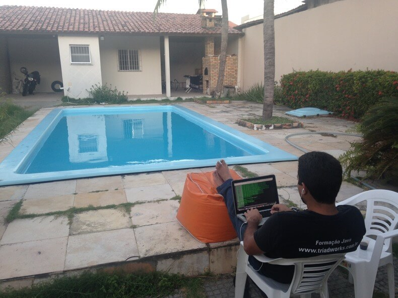

Aprenda a Programar hoje e Programa-se para o Futuro!!
A Programação está em nossas vidas, está em todo lugar que você imaginar
querendo ou não, faz parte das nossas vidas diarias.
E o que eu temos a ganhar aprendendo a programar?
Bom, vamos conhecer algumas vantagens para quem quer ter
programador como profissão ou carreira, e o bom é que elas podem ser
aplicadas,em praticamente qualquer tarefa do dia a dia e isso inclui
quase tudo o que fazemos hoje!!
Vamos a lista...
Melhora o seu raciocínio!
Profissão do futuro (agora)!
Você pode ganhar mais!
Trabalhar a qualquer hora e lugar !
Economizar tempo e dinheiro!
Nada paga o sensação de prazer!
Vamos Entender melhor??
Por que Melhora o seu raciocínio
Aprender programação nos faz lidar com desafios cognitivos que exigem concentração e pensamento sequencial e lógico.
Assim como ver matemática nas escola estimula nos estimula pensamento quantitativo, aprender a linguagem de programação desenvolve os circuitos neuronais relacionados com o pensamento abstrato e lógico.
Ao programar um novo software ou um comando de um robô, os mais jovens levam a mente ao máximo para resolver problemas complexos, fazendo com que aprendam padrões mais eficientes de processamento de informação e de resolução de desafios.
Dessa maneira, estimulam o lado esquerdo do cérebro, encarregado pelo pensamento espacial, lógico e analítico.
Profissão do futuro
O mercado de tecnologia é um dos mais promissores e movimentou R$ 479 bilhões em 2018, segundo a Associação Brasileira das Empresas de Tecnologia da Informação e Comunicação (Brasscom). Para este ano, a previsão é que o segmento cresça 5,7%, o que deverá se repetir até 2022. Isso, sem dúvida, é o reflexo da inserção de soluções modernas em diversos setores da economia.
Filtrando para o campo de programação, os profissionais desse setor correspondem a 40% das vagas no mercado de trabalho de TI , de acordo com levantamento da Conquest One, empresa de Staffing especializada em TI. É visível que essa profissão foi uma das poucas que não foi atingida pela escassez de vagas dos últimos anos. Então, se você está buscando uma área para ingressar, que tal investir na carreira de programador?
Você pode ganhar mais!
Sabe aquela tarefa repetitiva que toma seu tempo? Sabe aquele processo manual ou demorado que você tem que fazer todo dia?
Então, se você souber programar você pode criar um sistema que automatize isso para você melhorando seu desempenho na empresa, assim você se destaca mais e consequentemente será recompensado por isso ou poderá até fazer o sistema e vender "por fora" para a sua empresa, ou seja no final você irá ganhar mais.
Jornalistas, publicitários e várias outros profissionais já fazem isso. Sem falar que se você estudar mais um pouco pode até ter uma renda extra como freelancer ;)
Trabalhar a qualquer hora e lugar !

Programar é algo que exige basicamente apenas seu intelecto, independentemente de estrutura física (escritório, mesa etc). Isso quer dizer que você praticamente pode trabalhar de onde você quiser e a qualquer hora.
Claro, existem limitações mas basicamente você pode sim fazer isso e muitas vezes é melhor para a empresa que você trabalhe remotamente
Estimulam o trabalho em Equipe
Muita gente ainda acha que o programador é um profissional que se isola do mundo e tem que trabalhar sozinho, sem ajuda de outras pessoas. Essa ideia não poderia ser mais distante da realidade!
Hoje os programadores têm que trabalhar em conjunto para resolver os problemas e chegar a soluções lógicas e criativas. Quanto mais cabeças juntas lutando para uma causa comum, mais eficiência!
Não é à toa que muitos escritórios de grandes empresas da área da tecnologia digital são abertos, sem baias ou salas dividindo os trabalhadores. Muitas escolas querem, inclusive, trazer esses benefícios sociais da programação para as suas salas de aula e criar alunos mais colaborativos e empáticos.
Dessa maneira, aprender programação e robótica estimulam não só o raciocínio lógico e a escrita das crianças e adolescentes, mas também a sua inteligência social, ou seja, a sua habilidade de trabalhar em equipe e resolver os desafios de forma conjunta
Nada paga o sensação de prazer!
Quando você consegue exercitar seu cérebro para ele resolver problemas e a cada vez que você resolve um problema, seja ele simples ou mais complexo, o seu cérebro libera o que os cientistas chamam de dopamina que da aquela sensação de prazer, realização e auto suficiência.
Quando você está imerso na tecnologia e estudando programação você está constantemente resolvendo problemas, como já falamos no início e a cada vez que você resolve um problema, adivinha, o cérebro libera a dopamina, programar no final das contas é quase um prazer constante.
E sabemos que quando temos prazer em fazer algo acabamos viciados e ainda mais motivados a melhorar e aprender, isso é um ciclo vicioso de melhoria constante e aumento de qualidade, seja no seu trabalho ou na sua vida pessoal.